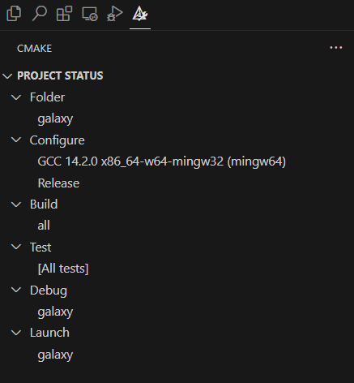

基于vscode的最简易的c/c++开发环境搭建
c++广泛用于系统开发、游戏开发和高性能应用。但对于非计算机专业的人来说，c/c++的配置和构建相当复杂。
最简单的方法是直接使用Visual Studio作为开发环境。但vs安装包超级大，而且使用起来很麻烦。所以这里给习惯vscode的windows用户推荐一个次优的开发环境方案：使用vscode及插件 + msys2作为开发环境。
安装及更新msys2
msys2是一个微型的Linux系统，可以使用msys2的包管理器（pacman）安装开发c/c++所需的所有工具，包括编译器（mingw64的gcc和g++），调试器（mingw64的gdb），项目构建配置工具（mingw64的cmake），项目构建工具（mingw64的make或ninja）。
首先去msys2官网下载安装msys2，安装完成后，运行MSYS2
MINGW64，执行以下命令更新系统： 1
pacman -Syu
如果提示需要重启msys2，则重启后继续执行此命令。
更新完成后，将 C:\msys64\mingw64\bin
添加到系统的环境变量中。建议添加到靠前的位置。
安装开发工具
接下来，在msys2中安装c/c++的开发工具：
1 | pacman -S mingw-w64-x86_64-toolchain |
toolchain包括了gcc、gdb等工具，而cmake包括了cmake和ninja等构建工具。
在c/c++开发过程中，如果需要使用其他库，也可以通过pacman安装。比如安装SFML库：
1 | pacman -S mingw-w64-x86_64-sfml |
安装vscode及插件
去官网下载并安装vscode。安装完成后，安装C/C++插件和CMake Tools插件。
注：其他插件可能会影响构建，比如python插件，需要提前disable。此外，构建时需要退出所有的conda环境。
注2：从2025年4月初开始，vscode的C/C++插件不支持其他vscode类型的ide了，比如cursor。要么使用vscode，要么在cursor中安装之前的插件版本。（微软，说好的开源精神呢？）
创建项目
在vscode中打开一个新的文件夹，作为项目的根目录，之后就可以在这个文件夹中开发c/c++项目了。
在项目文件夹的根目录，创建一个CMakeLists.txt文件，用于配置项目构建。其内容因语言/使用的库而会有不同。对于我的项目（使用c++语言，且使用SFML库），CMakeLists的内容如下：
1 | cmake_minimum_required(VERSION 3.10) |
配置并构建项目
项目编写完成后，使用vscode的CMake Tools插件来配置并构建项目。首先打开Cmake Tools插件页面。在configure中选择msys2 - mingw64的GCC编译器，如图所示。之后，插件会依据CMakeLists自动配置项目。

点击build右侧的按钮，插件会构建项目。构建好的可执行文件将出现在项目的build目录中。之后，点击test/debug/run栏右侧的按钮，就可以测试/调试/运行项目了。